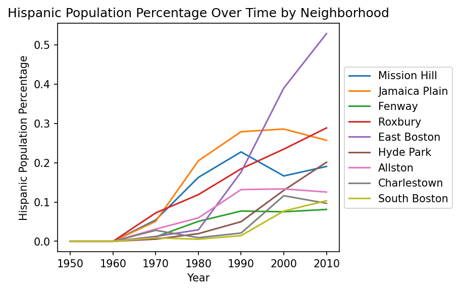
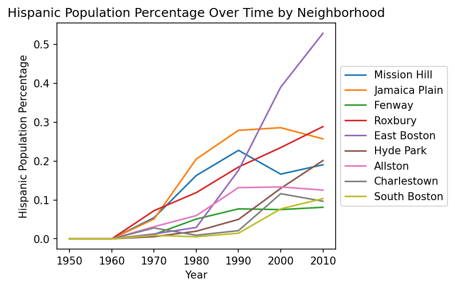

Reasoning: The usage of mapping in this visualization is excellent. Since the data being represented is geospatial in nature, a 2D representation of the United States with each state distinguished with borders allows for easy identification and comparision. In addition, the usage of a categorical colormapping is a good choice as the data in question (FPTP polling data) can be easily represented using either red or blue which are also associated with the Republican and Democratic parties respectively.
Visualization #2
Marks and Channels
Mark: Point
Channel: Position (Both), Color
Attribute: Launch Angle and Exit Velocity, Scoring Value
Reasoning: The usage of mapping in this visualization is well-executed. Since the data includes two variable attributes that are being compared against one another for correlation, the usage of a bi-directional position channel allows for easy identification and conclusions. The usage of a divergent colormap is a good choice as the data in question ranges on a spectrum between two extremes (very below average and very above average) with a distinct middle ground (average).
Visualization #3
Marks and Channels
Mark: Line
Channel: Position (both), Color
Attribute: Population Percentage, Year, Neighborhood
Reasoning: The usage of mapping in this visualization is good. The data includes one attribute (Hispanic Population Percentage) over a period of time (Years) so utilizing a bi-directional position channel allows for quick conclusions on trends over time. The usage of a categorical colormap is also a good choice as it allows for the Neighborhood attribute to be represented as distinct plots on the graph.

 
